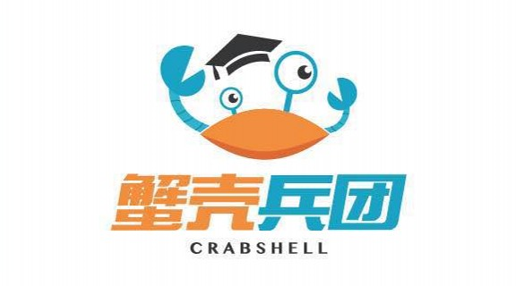
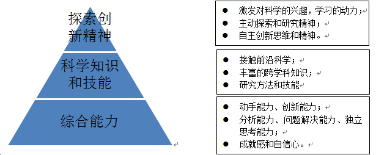
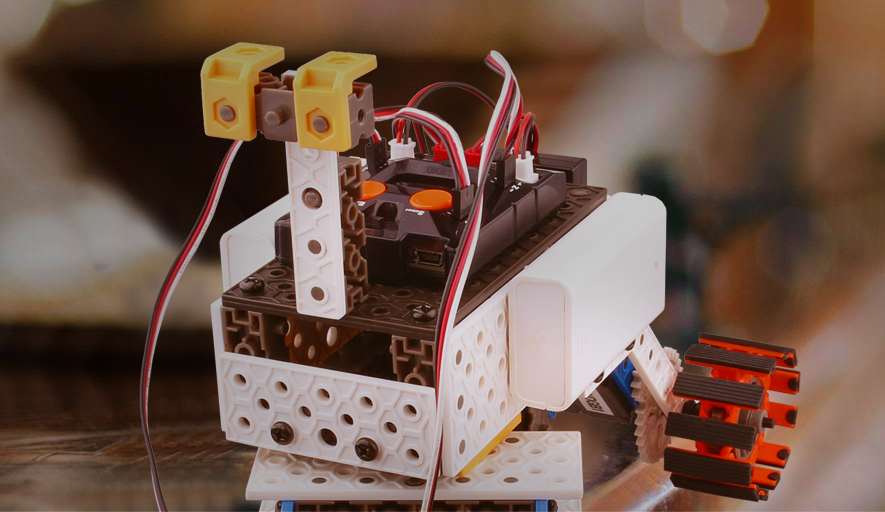
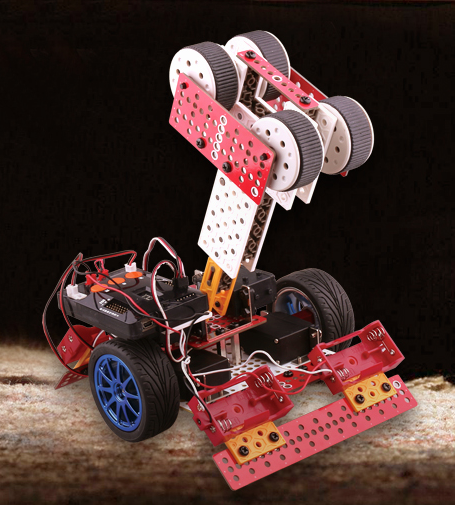
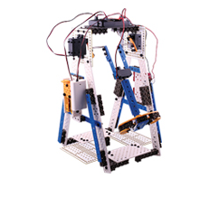

<div class="wrap mt30 pb60 ovh">
  <div class="content lh26">
    <p class="in28"></p>
    <p></p>
    <p><strong>为什么学机器人：</strong></p>
    <p style="margin-left:18.0pt;">1.&nbsp;&nbsp;&nbsp; 培养对科学的兴趣，增强学习动力；</p>
    <p style="margin-left:18.0pt;">2.&nbsp;&nbsp;&nbsp; 提高三维空间感和逻辑推理能力；</p>
    <p style="margin-left:18.0pt;">3.&nbsp;&nbsp;&nbsp; 增强数学、物理、机械工程、电子计算机等学科的应用能力，是应试教育的强有力补充；</p>
    <p style="margin-left:18.0pt;">4.&nbsp;&nbsp;&nbsp; 机器人行业是国家科创重点优先行业，机器人已成为中学必修课，未来将会有超过50%的4-18岁学生接受机器人教育。</p>
    <p style="margin-left:18.0pt;">5.&nbsp;&nbsp;&nbsp; 提高学生综合能力，提高动手能力、观察力、独立思考能力和问题解决能力。</p>
    <p>&nbsp;</p>
    <p><strong>机器人课程学什么：</strong></p>
    <p style="margin-left:18.0pt;">1.&nbsp;&nbsp;&nbsp; 学会跨学科的科学知识和技能，通过机器人制作的设计、搭建、编程、调试四个环节，学习包括力学、光学、结构学、机械工程学、电子工程学、数学、材料学等。</p>
    <p style="margin-left:18.0pt;">2.&nbsp;&nbsp;&nbsp; 学会编程，编程在欧美国家已是必学技能，美国总统奥巴马也亲自编制呼吁全美中小学生都要掌握编程技能以面向未来全球的竞争。</p>
    <p style="margin-left:18.0pt;">3.&nbsp;&nbsp;&nbsp; 学会耐心、专注、独立思考，培养学生三维空间感、动手能力、观察力、问题解决能力和创造力。通过动手创作，建立成就感和自信心。</p>
    <p style="margin-left:18.0pt;">4.&nbsp;&nbsp;&nbsp; 学会制作超过百种功能强大的机器人，了解身边和生活中几乎所有电子设备和机器设备的工作原理。</p>
    <p></p>
    <p>&nbsp;</p>
    <p><strong>课程简介：</strong></p>
    <p>蟹壳兵团机器人课程由牛津大学人工智能专业的团队开发，从国外引进专业先进的教具，配合富有教学经验的教学团队，从机械搭建开始分阶段和系统地教授机器人核心技术，即设计、搭建、编程、调试。</p>
    <p>我们强调的是知识体系和课程结构，我们的课程分为幼儿园、小学、初中三个年龄段，每个年龄段分阶段教学确保学生能从简到繁积累知识和培养技能。</p>
    <p>&nbsp;</p>
    <p><strong>学前课程（Robo Kid）</strong>- 适合 3-6岁</p>
    <p>3-6岁学前时段是小孩脑部发育和智力发展最快的时段，而这个时段的小朋友亲自动手体验以及讲故事的形式是他们对外界事物认知的最有效方式。我们机器人的课程针对该年龄段特征由简单到复杂，每节课引导小朋友通过观察、思考和动手制作完成一个作品，大大提高小朋友的手脑协调能力。而在课堂中，小朋友能通过故事和游戏掌握简单的科学和生活小知识。</p>
    <p><strong>第一阶段</strong>小朋友通过大模块及简单的电子元件组装机器人，学会识别和应用不同的形状，学会基本搭建，直观的体验简单结构与运动的关系，培养三维空间感、动手能力，培养观察能力和思考能力。</p>
    <p><strong>第二阶段</strong>小朋友接触到专为幼儿教育设计的刷卡编程，通过简单的排列组合和图像化编程提升逻辑思维和理解编程的概念。同时，学会利用不同的形状和不同功能的零件搭建更有趣和有功能的机器人。</p>
    <p><strong>第三阶段</strong>小朋友接触到简单的传感器，加大刷卡编程的难度和三维空间想象力的锻炼。小朋友能创作的机器人功能更多，提升小朋友的想象力和创造力。</p>
    <p>&nbsp;</p>
    <p><strong>小学课程（Robo Junior）</strong>- 适合7-12岁，按7-9岁和10-12岁分班</p>
    <p>近代最有名的儿童心理学家和教育家皮亚杰准确的将7-12岁儿童定位为“具体运算阶段”，这一阶段的重要特征是思维运算离不开具体事物的支持。所以这个年龄段的教育应该尽可能地将实物和教学相联系。我们机器人教育结合皮亚杰的理论，将课程设计成学生通过具体的实物、实验来探索科学知识和通过解决问题来锻炼学生综合能力。</p>
    <p><strong>第一阶段</strong>同学们运用模块及电子元件组装机器人，学会应用不同的形状和功能的零件，学会基础搭建，学会通过程序控制机器人运动的概念，直观的体验和学会丰富的科学知识，培养三维空间感、动手能力，培养观察能力和思考能力。</p>
    <p><strong>第二阶段</strong>同学们接触到不同的传感器，拼装功能多样和趣味的智能机器人；通过图像化编程学习编程，提升逻辑思维能力和编程技能。通过动手和实验直观地掌握丰富的科学知识，并能开始自行创作为自己服务的机器人。</p>
    <p><strong>第三阶段</strong>同学们接触到舵机，利用多个舵机结合更为进阶的编程精准的控制机器人动作，制作机械臂等简易化工业机器人。编程难度加深且自我创作空间几何式拓宽，学生能自我创作出复杂且功能越发强大、能解决问题的机器人。</p>
    <p><strong>第四阶段</strong>同学们制作以参加竞赛为导向或对技术标准有更高要求的机器人，加强对设计、精准、机械效率等核心机器人技术的培训。掌握的知识和深度叫板高中科学水平。问题分析和解决能力不亚于成人。</p>
    <p>&nbsp;</p>
    <p><strong>课程特色：</strong></p>
    <p>专业的教具：我们的教具由最早开始机器人教育和拥有最专业机器人教育的韩国引进，教具材料全部符合韩国和欧美质量标准，安全可靠。教具应用同学们喜爱的酷炫色彩，且融入了工业机械设计的元素，比乐高玩具更科学和专业；教具使用灵活度高和更复杂的类工业零部件，比乐高更锻炼和考验同学们的知识点和三维空间结构感，同时一套教具比一套乐高能拼装出10倍以上能活动和能编程出功能强大的机器人。</p>
    <p>&nbsp;</p>
    <p>专业课程体系：课程设计由牛津大学人工智能博士研发。根据学生年龄段和知识接受能力，通过设定实验和游戏，有体系的植入丰富且容易理解的科学知识和相关技能。</p>
    <p>&nbsp;</p>
    <p>培养能力的课程设置：一般的机器人培训机构都以看图搭建为主，我们的课程通过固定细分环节设计，确保学生在学习过程中大大提高多维度综合能力。课堂环节细分为：主题故事分享、知识点导入和讲解、观察和思考功能结构、学生拼装和编程、学生自主创作、学生演讲分享作品心得、知识点回顾。</p>
    <p></p>
    <p></p>
    <p></p>
    <p></p>
  </div>
</div>
